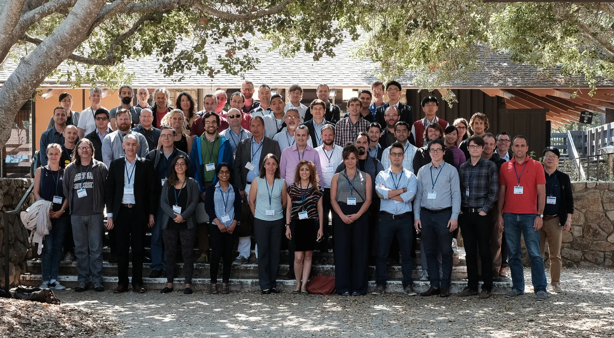
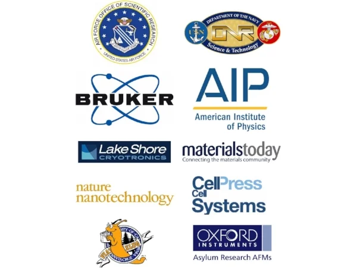

Speakers
Keynote Speaker
Charles Lieber (Harvard University)
Invited Speakers
Charge Transport in Bacteria and Proteins:
David Waldeck (University of Pittsburgh), Pau Gorostiza (ICREA and IBEC), Chris Nijhuis (Nat’l. U. Singapore), Paul Meredith (U. Queensland), Mohamed El Naggar (USC)
Nanofabricated Bioelectronics:
Nick Melosh (Stanford U), Alexander Sher (UC Santa Cruz), Bianxiao Cui (Stanford U.)
Organic Bioelectronics:
Daniel Simon (Linkoping U), Fabio Biscarini (U. Modena), George Malliaras (E. de Mines-St Etienne)
Printed Bioelectronics:
Michael McAlpine (U. Minnesota), Ana Claudia Arias (UC Berkeley)
Electroceuticals, Optogenetics, and Charge Transport:
Valentin Pavlov (Feinstein Inst. Med. Research), Xue Han (Boston U.), Caroline Ajo-Franklin (LBNL)
Bio-inspired Bioelectronics:
Alon Gorodetsky (UC Irvine), Serdar Sariciftci (JKU), Chris Bettinger (Carnegie Mellon U.)
Sponsors
